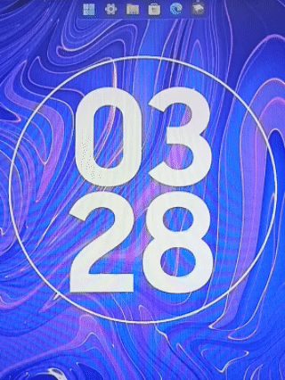
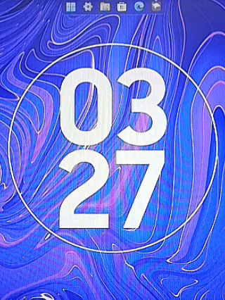

Startup Line Animation
VERSION 1.2.1 / WINDHAWK
01 / GLASS EFFECT

02 / SOLID COLOR

A customizable startup animation that reveals a message
as a sleek line sweeps across your desktop.
Features: Custom text, font, size and text color.
Choose between Glass and Solid styles, with adjustable blur,
glass brightness and line thickness. Includes startup delay,
Live Glass, a replay hotkey and battery-saving options.